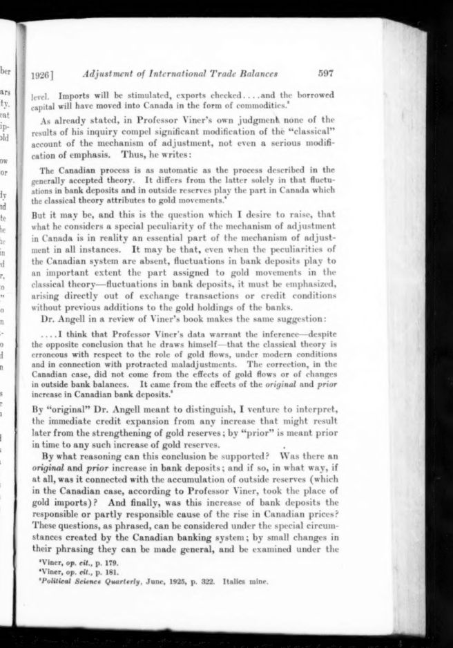

Tippetts, 1926: o fim da guerra judicial dos cheques ao par
Leitura: 8 min
Charles S. Tippetts narra o fim de seis anos de processos contra os bancos do Federal Reserve sobre a cobrança de cheques sem desconto e explica por que não convém obrigar por lei todos os bancos a aderir.


Em 7 de junho de 1926, a Suprema Corte dos Estados Unidos recusou-se a rever o caso Pascagoula National Bank contra o Federal Reserve Bank de Atlanta. Com isso, escreve Charles S. Tippetts, da Universidade de Iowa, terminou a batalha judicial sobre a compensação de cheques ao par pelos bancos do Federal Reserve, com os despojos divididos de modo mais ou menos igual. Pela primeira vez desde 1920, nenhum caso sobre o tema estava pendente nos tribunais.
O conflito, diz o autor, foi caro, longo e amargo. Em seis anos, cinco ações foram movidas contra bancos de reserva, e várias outras só foram evitadas porque alguns deles abandonaram métodos drásticos. Foram necessárias quatro decisões da Suprema Corte, três sobre o banco de Atlanta e uma sobre o de Richmond. Dois casos, contra os bancos de Cleveland e de São Francisco, terminaram em acordo em 1925.
O que estava em jogo?
Compensar ao par significa que o banco sacado paga o valor integral do cheque, sem deduzir uma taxa de câmbio pela remessa. Os bancos do Federal Reserve tentaram montar um sistema nacional de cobrança ao par; muitos bancos resistiram. Decisões anteriores haviam fixado alguns pontos. No primeiro caso de Atlanta, a Corte disse que o portador de um cheque não tem direito absoluto de apresentá-lo no guichê e exigir dinheiro. No segundo, que o banco de reserva não fora culpado de coerção e podia cobrar cheques de não membros, desde que sem pagar câmbio. No caso do banco de Monroe, Carolina do Norte, contra Richmond, em 11 de junho de 1923, que nada na lei obrigava o sistema a cobrar ao par cheques de não membros que quisessem deduzir câmbio, e que um estado podia autorizar seus bancos a pagar por saque contra correspondente.
Essa decisão, para Tippetts, foi o golpe de morte no plano de uma cobrança universal ao par. Desde então, os bancos de reserva deixaram de cobrar cheques de não membros que se recusavam a remeter ao par, que somavam cerca de 4.000.
O que pedia o banco de Pascagoula?
Animados, os opositores, apoiados pela National and State Bankers Protective Association, convenceram o Pascagoula National Bank, de Pascagoula e Moss Point, Mississippi, a mover ação em 9 de agosto de 1924 contra o banco de reserva de Atlanta, seu agente e o Federal Reserve Board. Desta vez o autor era um banco membro. Pedia crédito imediato pelos cheques depositados, o direito de deduzir taxas ao remeter e a proibição de que o banco de Atlanta cobrasse cheques vindos de fora do distrito. Alegava ainda que a emenda Hardwick, que proibia cobrar câmbio dos bancos de reserva, violava a Quinta Emenda da Constituição ao tirar propriedade sem devido processo legal.
O ponto técnico é a “disponibilidade diferida”. Pela Regulação J, de 1924, os bancos de reserva só creditavam os cheques depois de certo número de dias, segundo uma tabela, para garantir a cobrança; cheques em trânsito não contavam como reserva legal. O banco de Pascagoula dizia que isso violava a seção 16 da lei, que mandava receber os cheques “em depósito ao par”.
Como decidiram os tribunais?
O juiz Sibley, do tribunal distrital do norte da Geórgia, negou a liminar em 3 de outubro de 1924 e rejeitou a ação em 29 de dezembro. A tabela de disponibilidade seria prática bancária prudente, dado o volume do float, e conciliaria a seção 16 com a 19, que exige reservas em “saldos líquidos efetivos”. Quando o crédito é dado ao fim do prazo, a operação vira depósito geral. A emenda Hardwick permitia taxas razoáveis entre bancos, até 10 centavos por 100 dólares, mas não contra os bancos de reserva, cláusula acrescentada no Congresso e, segundo o autor, responsável por toda a controvérsia. Quanto à Constituição, o banco nacional não podia reclamar de leis federais sob as quais se constituíra.
Simplesmente se lhe diz que, se fizer a coisa em questão, deve fazê-la sem compensação. (It is simply told that if it does the thing in question it must be done without compensation.)
A Suprema Corte não viu questão constitucional que justificasse recurso direto e, em 30 de novembro de 1925, mandou o caso ao Tribunal de Apelação do Quinto Circuito, gesto interpretado como confirmação da constitucionalidade. A corte de apelação decidiu em 11 de fevereiro de 1926, por 2 a 1, com os juízes Walker e Bryan na maioria. Discutiu só a disponibilidade imediata: a seção 16 fixa o valor do crédito, não o momento; exigir crédito imediato obrigaria o banco de reserva a emprestar sem juros. O juiz Foster divergiu: receber para cobrança não é receber em depósito, e o banco de reserva teria de dar crédito imediato ou permitir deduções. Tippetts reconhece força no voto, mas a maioria prevaleceu.
E os outros casos?
No caso do Brookings State Bank, de Oregon, a justiça federal concluiu que o banco de São Francisco fora culpado de coerção; em 9 de junho de 1925, um júri concedeu ao banco 1 dólar de dano efetivo e 17.500 dólares de indenização punitiva, e o caso acabou em acordo. Contra o banco de Cleveland, um banco de Catlettsburg, Kentucky, obteve em 1922 uma liminar contra métodos opressivos; o agente que fazia as cobranças no guichê, escreve o autor, mostrou mais zelo do que sabedoria. Também houve acordo.
Os opositores, portanto, também ganharam: forçaram os bancos de reserva a abandonar os métodos compulsórios de 1919 e 1920, e a recusa se espalhou. Em 1926, os bancos que não remetiam ao par estavam distribuídos de Cleveland a São Francisco, com os maiores números nos distritos de Atlanta e Minneapolis; só os distritos de Boston, Filadélfia e Nova York eram integralmente ao par. A oposição, conclui, não era de alguns estados do Sul, mas nacional, mais forte no Sul, no Meio-Oeste e no Noroeste.
Convém obrigar todos os bancos?
Alguns, como Walter E. Spahr em seu livro de 1926 sobre compensação de cheques, propunham uma lei federal que tornasse a remessa ao par obrigatória para todos os bancos, medida que Spahr comparava ao imposto que eliminou as notas dos bancos estaduais em 1865. Tippetts se opõe por duas razões. A constitucionalidade seria contestada e envolveria leis de Dakota do Sul e de sete estados do Sul, de 1920 e 1921, que davam aos bancos estaduais o direito de cobrar câmbio. E, sobretudo, a política: a lei reacenderia a hostilidade da campanha de força de 1919 e 1920, uma das controvérsias mais amargas da história bancária americana.
A comissão conjunta do Congresso sobre a filiação ao Federal Reserve revelara que muitos bancos estaduais ainda temiam o sistema. Os membros estaduais eram pouco mais de 1.400, 260 a menos que em 1922. Por mais desejáveis que fossem a compensação universal e uma decisão sobre os pontos constitucionais, o mais sábio, conclui o autor, seria deixar o assunto descansar por um tempo.
Na minha leitura
Na minha leitura, o caso mostra como a infraestrutura de pagamentos é, antes de tudo, uma questão de incentivos. As taxas de remessa eram receita para os bancos que as cobravam, e a compensação ao par, um ganho para o comércio como um todo. O Federal Reserve tentou impor o padrão pela força, perdeu legitimidade e acabou com um sistema parcial.
A disputa sobre a disponibilidade diferida também é atual em seus termos econômicos. Quem financia o float, o banco central ou os bancos, é a pergunta por trás de qualquer sistema de liquidação; a resposta de 1926, crédito só após o prazo de cobrança, protegia o balanço do banco central e as reservas efetivas.
Glossário
- Compensação ao par
- pagamento do valor integral do cheque pelo banco sacado, sem dedução de taxa de remessa.
- Taxa de câmbio (exchange charge)
- desconto cobrado por bancos ao remeter fundos para pagar cheques sacados contra eles.
- Disponibilidade diferida
- regra pela qual o crédito de um cheque depositado só fica disponível após o prazo de cobrança.
- Float
- valor de cheques em trânsito, creditados a um banco e ainda não debitados a outro.
- Banco não membro
- banco estadual que não aderiu ao Federal Reserve.
- Certiorari
- ordem pela qual a Suprema Corte americana aceita rever uma decisão; sua recusa mantém a decisão inferior.
Fontes
- The End of the Par Collection Litigation — Charles S. Tippetts (University of Iowa) (pp. 610–621). Internet Archive (número completo, PDF)
- Edição completa, com os demais artigos: Nº 200 do Arquivo.
Documento em domínio público (EUA, publicado antes de 1931), via JSTOR Early Journal Content e Internet Archive. Resumo e comentário do autor deste site, sem afiliação com a American Economic Association. Encontrou um erro? Escreva: a correção é publicada no próprio texto, com data.
← Feis, 1926: o ouro importa menos no ajuste do balanço de pagamentos ↑ Nº 200 · Feis e o ajuste externo, Cole e as manias agrícolas Cole, 1926: carneiros, amoreiras e galinhas como bolhas especulativas →